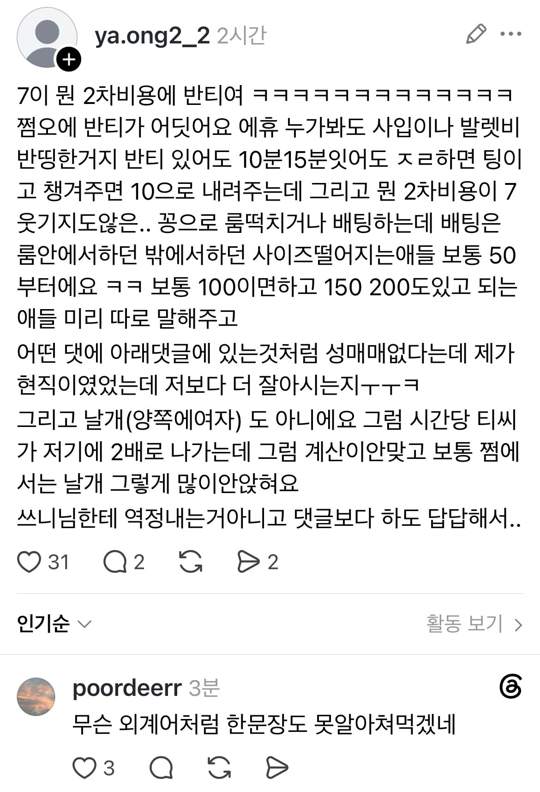

분명 음지용어인거같긴한데 대다수의 남자들은 한국어임에도 한 문장도 이해를 못한다고함

분명 음지용어인거같긴한데 대다수의 남자들은 한국어임에도 한 문장도 이해를 못한다고함

유흥용어자나 모름???
어제 종태원에서 완식이 만나서 간단숙이했는데 알고보니 완전 끼순이인 거야
그래서 나 어제 완전 맷돌 돌렸잖아
끼끼리 만나면 그만치 슬픈일도 없음
가벼운 워밍업이다~
뒤집어져~
스칸디나비아 사람들끼리 서로 언어를 보면 이런 느낌이려나
그러니까 글쓴이가 창녀라는거지?
ㅋㅋㅋㅋㅋㅋㅋㅋㅋㅋㅋㅋㅋㅋㅋㅋㅋ
진짜 개비싸구나 저런거 하는 사람들 다 부자임?
업소용어야?
발렛이 대리주차 인 거 말곤 모르겠네
와 알바했어서 그런지 상황이 대충 눈에 보이네ㅋㅋ
대충 난 고오급 창녀라 100~200받는다고 추측되긴함
발렛말곤 뭔 소리냐
발렛 말고 뭐라는 거야
먼소리여
50부터는 씨발 보짓값 존나 비싸네 ㄷㄷ
딱 3단어 알아들음. 정확히 아는 건 쩜오 하나. 쩜오야 워낙 성매매 썰 올라온 거에서 많이 나오는 거라 암.
나머지 두개는 발렛(주차 말하는 거 아님 모르는 거), 룸떡(이건 걍 룸에서 떡친다는 거 같은데 아님 말고)
반티 반 힉생들이 맞춰입은 티
ㅋㅋㅋㅋㅋㅋ돈주고 해본적도 없고 저런식의 유흥을 해본적이 없어서 진짜 하나도 모르겠음ㅋㅋㅋㅋ 그래서 제미나이한테 해석시켰더니 다 해석해준다 ㅋㅋㅋㅋ ai의 시대가 도래한듯
와 맥락으로 유추해볼라해도 안되는데 뭐냐
룸빵얘기같다 반티는 뭐야 30분인가?
조현병 환자가 쓴 글이냐?
이 글은 유흥업소(룸/쩜)에서 일했던 사람이 업계 용어를 써가며 “저 계산/설명이 말이 안 된다”고 반박하는 댓글이에요. 은어가 너무 많아서 헷갈리는 게 정상입니다.
쉽게 풀어서 말하면:
“7만 원이 어떻게 2차 비용이야? 반티(팁을 반으로 나누는 것)라고 해도 쩜오에서 반티가 어디 있어. 누가 봐도 사입비나 발렛비 같은 비용을 반씩 나눈 거겠지.
그리고 반티가 있다고 해도 10~15분 정도밖에 안 있었는데 뭐라고 하면 손님을 보내버리고, 잘 챙겨주면 비용을 10만 원 정도로 낮춰주는 식이야. 그런데 2차 비용이 7만 원이라는 건 말도 안 돼.
공짜로 룸에서 성관계를 하거나 ‘배팅’을 하는 경우가 있는데, 배팅 비용은 룸 안에서 하든 밖에서 하든 보통 몸값(?)이 낮은 애들도 50만 원부터 시작해. 보통 100만 원 정도 하고, 150~200만 원인 경우도 있어. 가능한 사람들은 미리 따로 알려주기도 하고.
그리고 아래 댓글에서 ‘성매매는 없다’고 하는데, 나는 실제로 그 업계에서 일했던 사람인데 나보다 잘 아는 건가?
또 ‘날개’(양쪽에 여자를 앉히는 것)도 아니야. 날개라면 시간당 TC가 여자 두 명 몫으로 나가니까 계산이 안 맞아. 보통 쩜오에서는 그렇게 여자를 많이 앉히지도 않아.
쓰니(글쓴이)한테 화내는 건 아니고, 댓글들을 보니까 너무 답답해서 쓴 거야.”
은어를 하나씩 보면
쩜오(0.5): 유흥주점 업계에서 쓰는 업소/등급을 가리키는 은어. 여기서는 일반적인 술집이 아니라 여성이 손님과 함께 술을 마시고 접객하는 형태의 업소를 말하는 것으로 보입니다.
반티: 여기서는 TC(여성 접객원에게 지급되는 시간당 비용/수당)를 업소와 나누거나 절반으로 계산하는 방식을 지칭하는 듯합니다. 문맥상 작성자가 “쩜오에서 그런 식의 반티가 흔하지 않다”고 주장하는 거예요.
사입비: 업소가 접객원을 데려오는 과정에서 발생하는 비용을 뜻하는 업계 은어로 보입니다.
발렛비 반띵: 발렛(대리 주차) 비용을 업소와 누군가가 50:50으로 나눠 부담했다는 의미.
팅: 손님을 돌려보내거나 거절하는 것.
2차: 이 문맥에서는 술자리 접객을 넘어 성관계 등으로 이어지는 행위를 뜻하는 유흥업계 은어입니다.
배팅: 여기서는 여성과 성관계를 하기 위해 별도의 돈을 지불하는 것을 의미하는 것으로 쓰였습니다.
날개: 한 손님 옆에 여성을 한 명만 앉히는 게 아니라 양쪽에 두 명을 앉히는 형태를 말하는 것 같습니다.
TC: Table Charge/Time Charge 계열의 업계 용어로, 여기서는 여성 접객원에게 지급되는 시간당 비용이라는 뜻으로 사용됐습니다.
지피티 졸라 잘 아네
지피티 이새끼 어디서 학습하고 다니냐ㅋㅋㅋ
여자애들은 돈 쉽게 버네
150 200이면 웜매 씨부랄꺼
동남아도 여자들이 먹여살리드만
참 살기 쉬워
외계인과 교신중이잖아